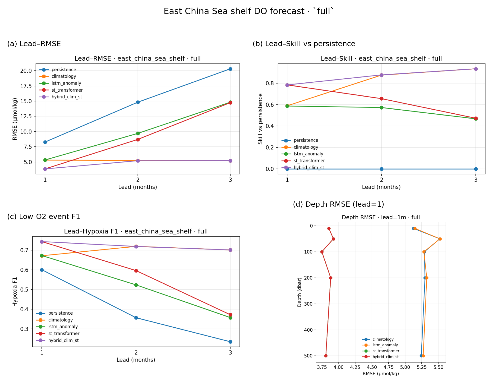
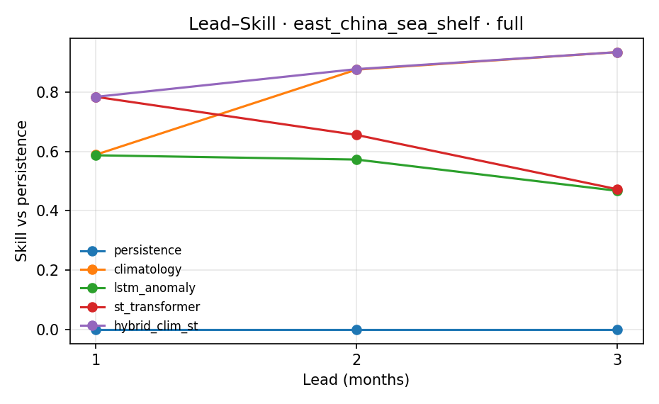
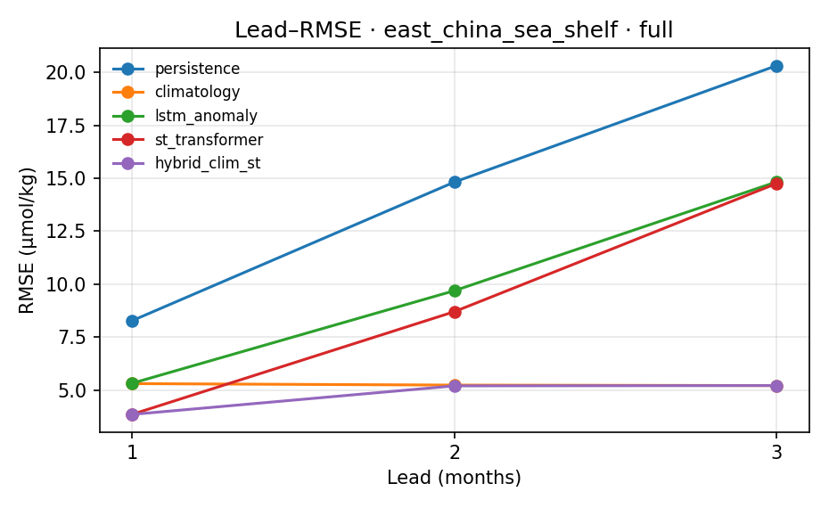

Regional mid-range DO forecast under sparse observation, with adaptive low-O2 event scores. Sibling IP to Dianchi Mask-View imputation: reconstruct and predict oxygen where monitors fail. Target venues: AIES / Ocean Modelling.
Global products like GOBAI-O2 excel at reconstruction. This project targets 1–3 month forecast on a shelf region, with Mask-View sparse stress tests (point / block / block-time / sensor / station / mixed / Argo), section extrapolation, and multi-source drivers (WOA T/S → N², OISST, ERA5-backed wind) that do not require GOBAI access. A hybrid climatology + spatiotemporal Transformer blend recovers skill when pure ST drifts at longer leads.
| Setup | Lead-1 best | Lead-2 best | Lead-3 best |
|---|---|---|---|
| O₂-only (WOA-informed) | ST 3.84 | hybrid 5.19 | clim 5.21 |
| + physics drivers | ST 3.87 | hybrid 5.04 (ST alone 5.69 vs 8.69 without physics) | clim/hybrid ≈5.21 |
| Argo/section sparse | ST ≈5.22 | clim 5.23 | clim 5.21 |
Physical channels (WOA T/S→N², OISST, wind) mainly lift mid-lead ST skill. Absolute hypoxia is rare; events use adaptive P10 low-O2 thresholds. Yellow Sea / Yangtze plume sensitivity tables are in the repo.



pip install -r requirements.txt
python scripts/bootstrap_and_smoke.py
python scripts/download_woa_oxygen.py
python scripts/build_woa_informed_cube.py
python run_multilead.py --demo --quick
python scripts/export_summary.py
For paper-grade claims, place GOBAI-O2 under data/raw/gobai/ (DOI 10.25921/z72m-yz67)
and run subset_gobai.py. Use py -3.12 on Windows if needed.